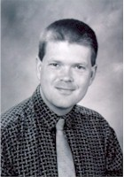

In
addition to contributing to Nitrate Online, Kansas Citian Dan Lybarger
works as a technical writer and writes for the KC art journal, Review.
Previously,
he was a contributing critic for PitchWeekly (a Kansas City alternative
weekly with a readership of 296,000) from 1993 to May of 2000. Before that, he
contributed reviews for the now-defunct Spectrum Weekly in Little
Rock (from 1991 to 1992) and wrote profiles of Douglas Fairbanks, Jr. and Mel
Brooks for The (Buster) Keaton Chronicle. He also edited the American
Native Press, a quarterly newsletter about Native American media issues.
Lybarger holds an M.A. in writing from the University of Arkansas at Little Rock and a B.A. in English from Ottawa University in Ottawa, KS. He has recently joined the internet-based comedy troupe, BareTV.com.